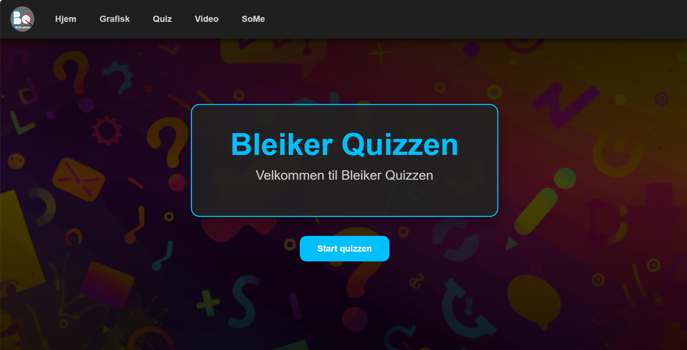
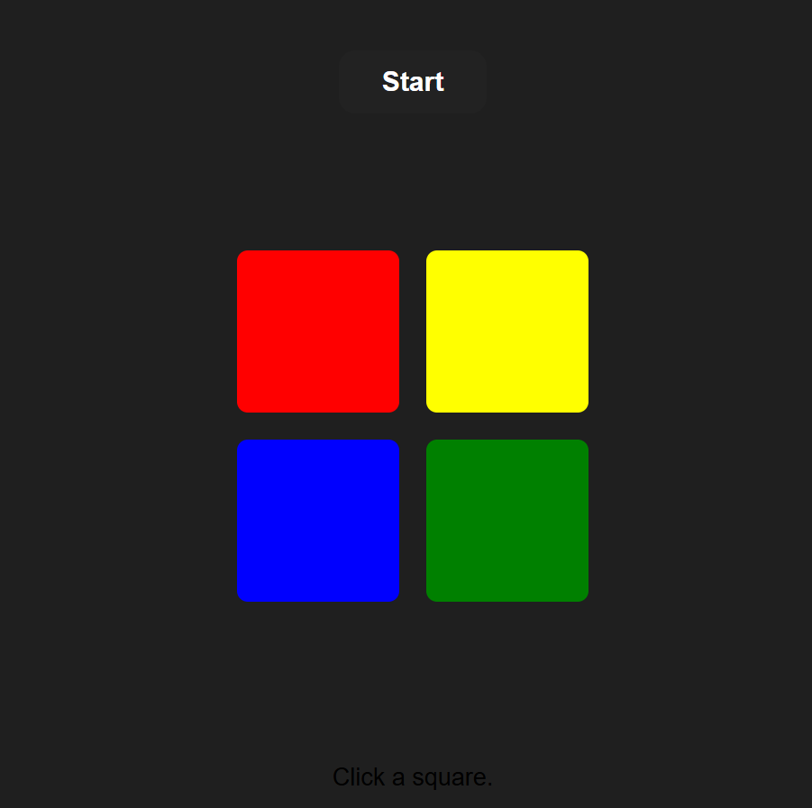
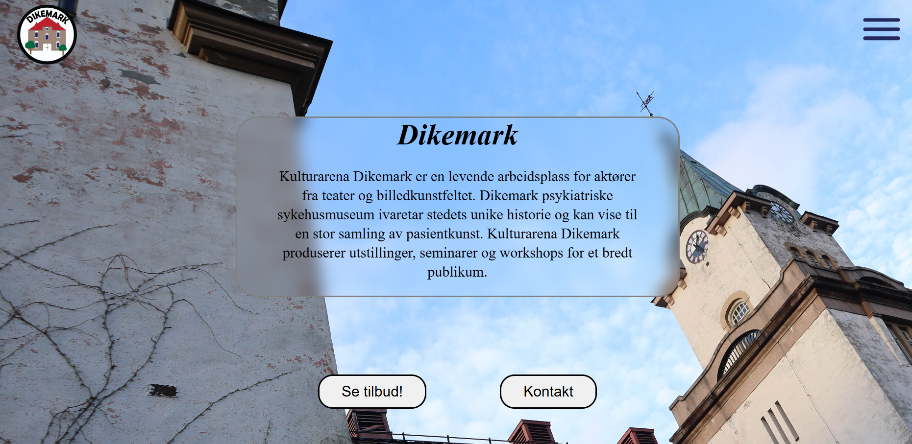

BleikerQuizz
Et quizz-prosjekt som viser hvordan jeg jobber med struktur, funksjonalitet og innhold. Bildet over er lagt inn fra filen quizz.png.
Velkommen til min webportefølje. Her finner du prosjekter jeg har jobbet med i VG1, med fokus på programmering, grafisk arbeid og utvikling av konsepter. Nettstedet viser hva jeg kan, hva jeg lærer, og hvordan jeg liker å jobbe med digitale løsninger.

En kort presentasjon av hvem jeg er, hva jeg har gjort, og hva jeg ønsker å lære mer om.
Engasjert og serviceinnstilt person med stor interesse for programmering, utvikling av konsepter og digitale løsninger. Motivert for å bidra med idéer, løse problemer og lære mer gjennom praktisk arbeid. Jeg er fleksibel, lærevillig og positiv i møte med nye utfordringer.
Norsk – flytende
Engelsk – meget god
Personlige egenskaper: serviceinnstilt, imøtekommende, fleksibel, tilpasningsdyktig,
punktlig, ansvarsbevisst og god samarbeidsevne.
Arbeidsuke: Telenor
Bleiker videregående skole (2026 – )
Studieretning: Informasjonsteknologi og medieproduksjon
Her kan du vise frem programmeringsprosjektene dine. Jeg har lagt inn GitHub-lenkene du sendte, og bildene kan ligge i samme mappe som index.html.

Et quizz-prosjekt som viser hvordan jeg jobber med struktur, funksjonalitet og innhold. Bildet over er lagt inn fra filen quizz.png.

Dette er et av prosjektene dine. Her kan du skrive hva du laget, hvilke språk du brukte, og hva du lærte underveis.

Her kan du legge inn et nytt prosjekt eller en videreutvikling. Dette feltet passer fint til å vise progresjon og nye idéer.
Kontaktinformasjonen din er samlet her, slik at bedrifter enkelt kan nå deg.
Jeg er mest interessert i programmering og liker å utvikle konsepter. På denne porteføljen kan du se arbeidene mine, både fra programmering og andre kreative oppgaver.
Denne siden kan brukes som vedlegg eller lenkes til sammen med CV og søknadsbrev når du søker praksisplass.